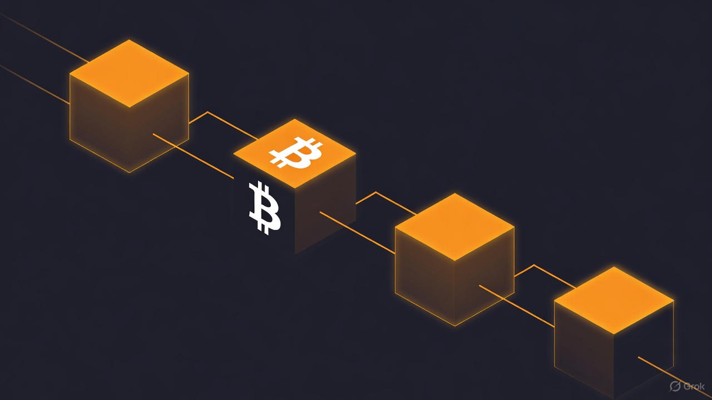
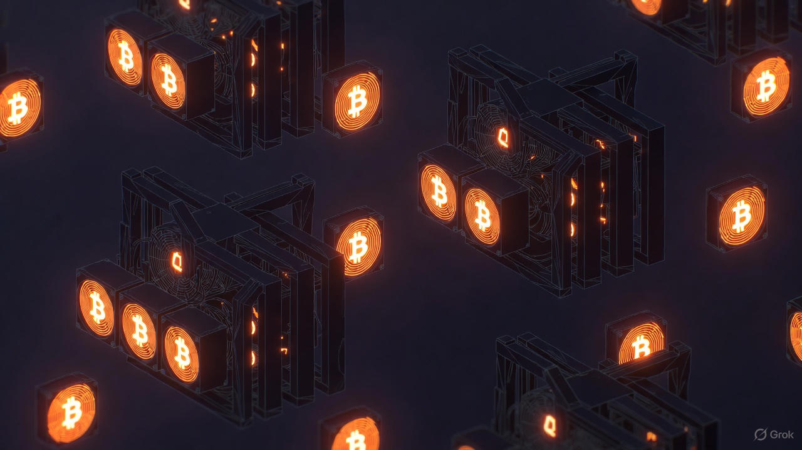
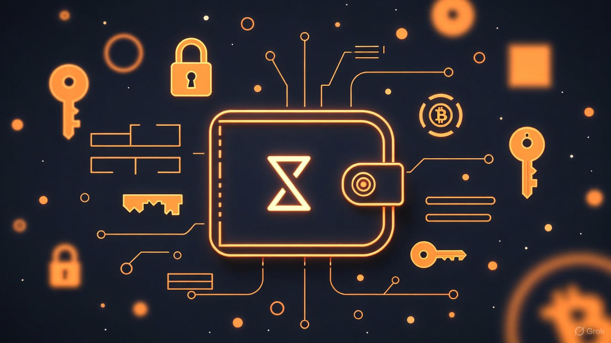
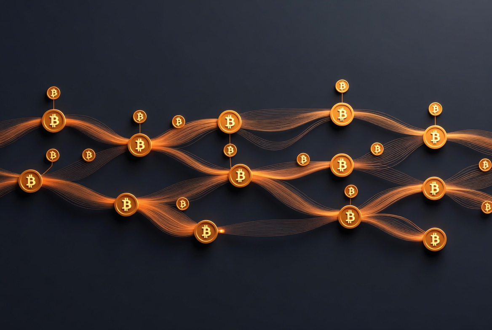
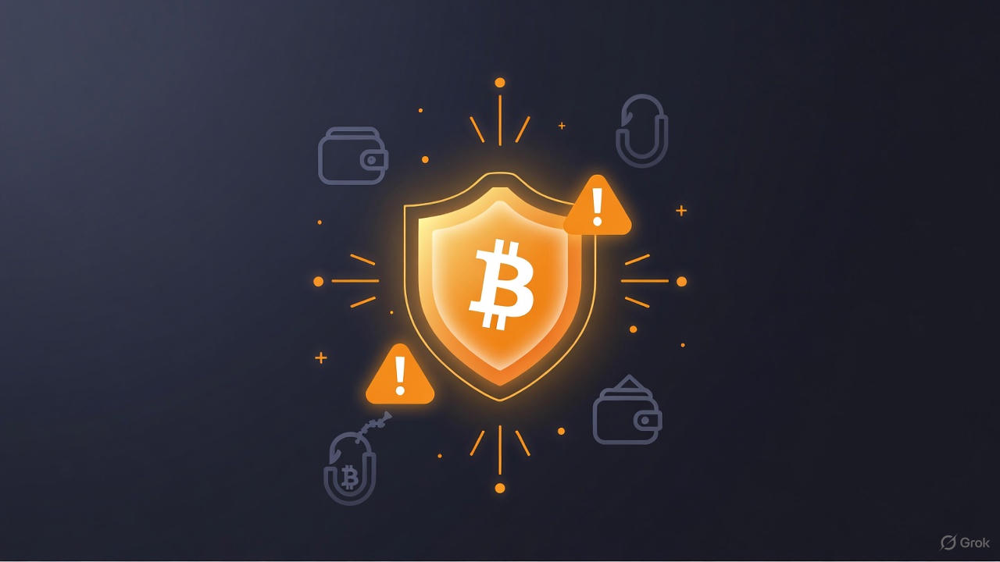

Was genau ist Bitcoin?
Die meisten denken bei Bitcoin an Spekulation, Blase oder digitales Spielgeld.
In Wahrheit ist es das erste echte, dezentralisierte Peer-to-Peer-Geld der Welt – absolut knapp, zensurresistent, global transportierbar und frei von Banken & Staaten.
Entdecke, warum Bitcoin als „digitales Gold“ gilt und wieso es das härteste Geld ist, das die Menschheit je geschaffen hat.
Satoshi Nakamoto & die Entstehungsgeschichte
Mitten in der Finanzkrise 2008 erschien ein Phantom namens Satoshi Nakamoto und veröffentlichte das Bitcoin-Whitepaper – die Blaupause für ein Geldsystem ohne Banken und Staaten.
Von der Cypherpunk-Bewegung über den Genesis-Block mit der legendären Anti-Bailout-Nachricht bis hin zu Pizza für 10.000 BTC und der heutigen institutionellen Adoption: Entdecke die faszinierende, mysteriöse Geburtsgeschichte von Bitcoin und warum die wahre Identität von Satoshi bis heute das größte Rätsel der Krypto-Welt bleibt.

Wie funktioniert die Blockchain?
Stellen Sie sich ein uraltes, unzerstörbares Buch vor, das weltweit auf Tausenden Computern existiert und in dem jede Bitcoin-Überweisung für immer festgehalten wird – ohne dass irgendjemand es verändern kann.
Erfahren Sie Schritt für Schritt, wie Blöcke, Hashes, Baumstrukturen, Proof of Woork und die Regel der längsten Kette die unveränderliche, dezentrale und zensurresistente Blockchain bilden, die das wahre Herzstück von Bitcoin ist.

Mining & Hashrate
Mining ist der Herzschlag von Bitcoin: Tausende Miner weltweit kämpfen mit riesiger Rechenkraft um die Lösung eines mathematischen Rätsels – alle ~10 Minuten entsteht ein neuer Block, neue Bitcoins werden geschaffen und das Netzwerk bleibt sicher.
Erfahren Sie, wie Proof-of-Work funktioniert, warum die Hashrate das System nahezu unangreifbar macht, wie Halvings die Knappheit sichern und warum Mining trotz hohem Stromverbrauch essenziell für Bitcoin ist.

Wallets & Private Keys
Wallets speichern nicht Ihre Bitcoins – sie verwalten den einzigen mathematischen Schlüssel, der Ihnen den Zugriff auf Ihr Vermögen in der Blockchain gibt.
Entdecken Sie die Unterschiede zwischen Hot- und Cold-Wallets, Hardware-, Software- und Paper-Wallets, warum „Not your keys, not your coins“ das wichtigste Motto ist, wie Seed-Phrasen funktionieren und wie Sie Ihre Bitcoins wirklich sicher selbst verwahren können.

Transaktionen & Gebühren
Wie fließt Bitcoin wirklich von A nach B? Erfahren Sie den genauen Ablauf einer Transaktion – vom Signieren mit Ihrem privaten Schlüssel über den Mempool bis hin zur Bestätigung in der Blockchain.
Verstehen Sie, warum Gebühren schwanken, wie Miner priorisieren, was UTXO-Pakete und Wechselgeld bedeuten, warum RBF hilft, wenn’s mal hakt, und wie Lightning Network Bitcoin blitzschnell und günstig für den Alltag machen kann.
Bitcoin als Anlage & Preisbildung
Warum ist Bitcoin weit mehr als nur Spekulation? Entdecken Sie, wie absolute Knappheit, Halvings, institutionelle Adoption und das „digitale Gold“-Konzept den Preis langfristig treiben – trotz starker Schwankungen.
Von HODL-Strategie über monatliche Sparpläne, Stock-to-Flow-Modell bis hin zu historischen Renditen von über 200 % jährlich: Verstehen Sie, warum Bitcoin für viele als ernsthafter Wertspeicher und Inflationsschutz gilt.

Sicherheit, Risiken & häufige Betrugsmaschen
Bitcoin ist das sicherste Geldsystem der Welt – die Blockchain wurde in über 17 Jahren nie gehackt.
Die größten Gefahren lauern also beim Nutzer: Börsen-Hacks (Mt. Gox, FTX, Bybit), Phishing, Fake-Wallets, Ponzi-Schemata und Schadsoftware. Erfahren Sie, wie Sie sich mit Cold-Wallets, Adress-Checks, „Not your keys, not your coins“ und gesundem Misstrauen schützen können – und warum die wahre Bedrohung oft nur fehlendes Wissen ist.
Die Zukunft von Bitcoin
Wird Bitcoin zum globalen Standard, zum „härtesten Geld“ der Menschheit – oder bleibt es eine Nischenlösung?
Blicken Sie voraus: von rasant wachsender institutioneller Adoption, Lightning Network für Alltagszahlungen, technischen Upgrades bis hin zu Herausforderungen wie Regulierung, Verbotsversuche, Bildungsmangel und ungetesteter Krisenresistenz. Entdecken Sie realistische Szenarien, Hyperbitcoinization-Visionen und warum viele glauben: Bitcoin setzt sich durch – egal wie langsam.